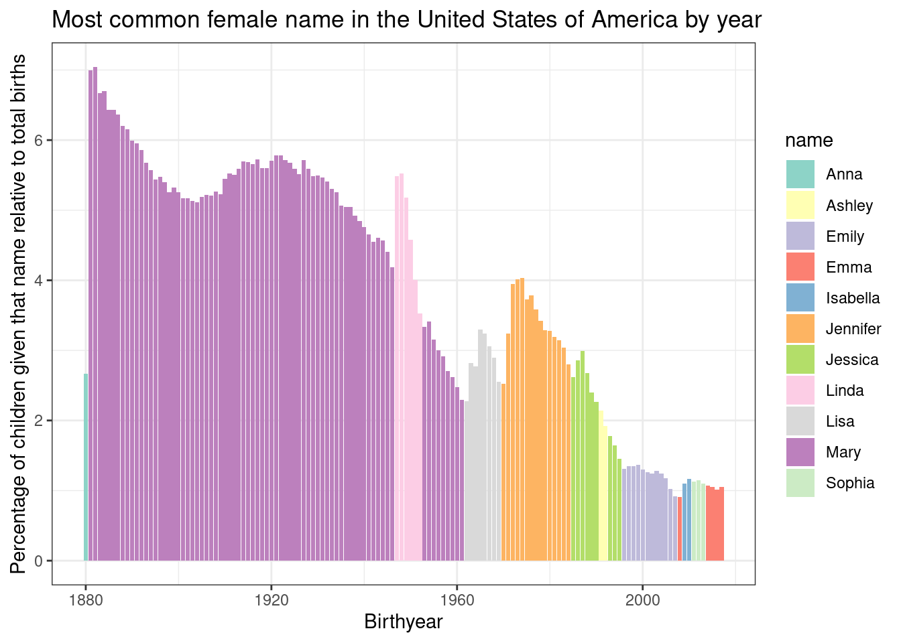
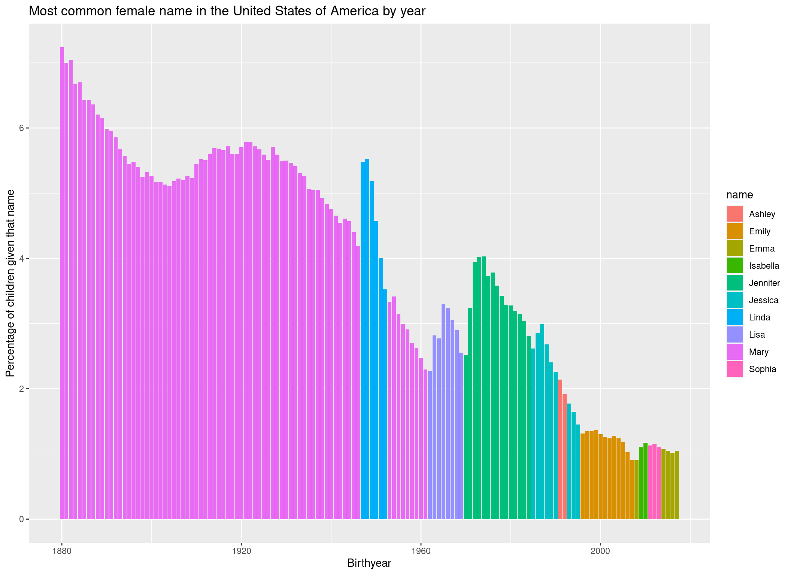
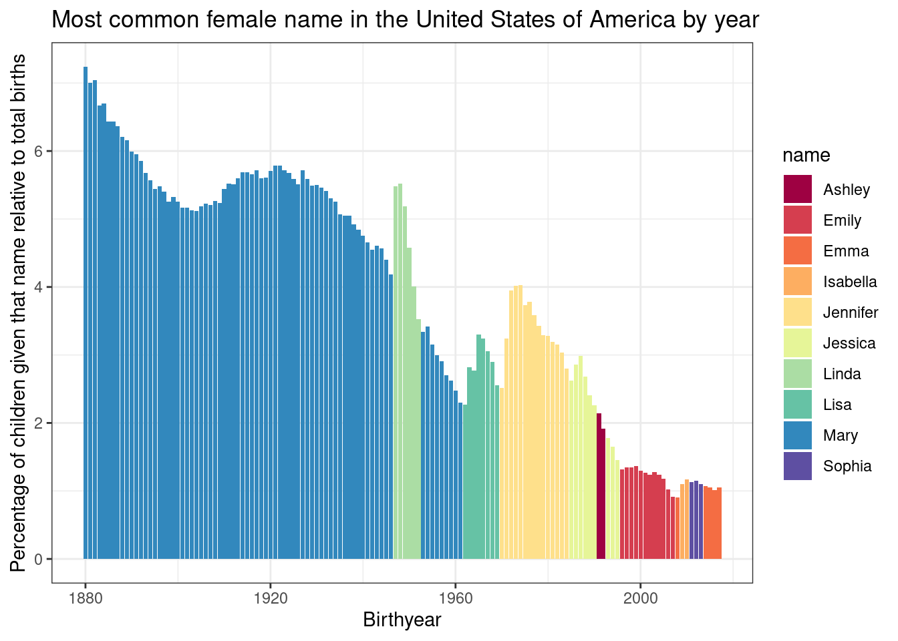

install.packages("tidyverse")The Big Picture
Now that we have completed our set up, let’s dive right into programming with R. In this chapter, we will go through a “mini-project” with very basic data, which follows a possible workflow when working with data in R. We will install and load packages, load data, perform some operations on this data, calculate some summary statistics and plot them. In later chapters, we will go into a little more depth for each topic, so don’t worry if you don’t understand something quite yet, it will be covered again in later chapters.
Packages
Packages are extensions to the base R you get by default. Let’s install a package collection, that makes it easier to work with data in R:
The tidyverse is a collection of packages following a common philosophy, and facilitating many aspects of coding in R. We will use functions from base R and from the tidyverse. However, as I personally find them a bit more intuitive in many cases, we will use tidyverse functions a lot in the current chapter, so you can quickly get an insight into what is possible with R.
# tidyverse code will be marked like this.Just by installing the packages, we can’t use them. We also have to load them into our R session:
library(tidyverse)── Attaching core tidyverse packages ──────────────────────── tidyverse 2.0.0 ──
✔ dplyr 1.1.2 ✔ readr 2.1.4
✔ forcats 1.0.0 ✔ stringr 1.5.0
✔ ggplot2 3.4.2 ✔ tibble 3.2.1
✔ lubridate 1.9.2 ✔ tidyr 1.3.0
✔ purrr 1.0.1
── Conflicts ────────────────────────────────────────── tidyverse_conflicts() ──
✖ dplyr::filter() masks stats::filter()
✖ dplyr::lag() masks stats::lag()
ℹ Use the conflicted package (<http://conflicted.r-lib.org/>) to force all conflicts to become errorsLoad Data
Data is loaded into R so you can work with it. For this chapter, we are going to use the data set babynames, which we can find on the tidytuesday site. I have already tweaked the data set a bit, so download it from here in case you want to follow along. Right-click on the respective data set found under this link, select ‘save as’ and then choose a folder on your notebook where to save it. We have talked about where that optimally should be in Workflow: Exercises. Our goal is to look at the most common name in every year and make a nice plot out of it.
So, after downloading it and saving it in the folder raw_data within my project directory, I can load the data set into R with:
babynames <- read.csv("./raw_data/babynames.csv")This will load the data into R and assigning it the name babynames by using the <-. You can see the data popping up in your Environment pane on the upper right. Note that the file path might differ on your device, depending on where you saved your data.
Take a look
Now that we have our data loaded safely into R, we can get an overview with a multitude of commands. One of the most important ones might be head(), which will give us the first few rows of the data:
head(babynames) year sex name ID
1 1880 F Mary 1
2 1880 F Anna 2
3 1880 F Emma 3
4 NA F Elizabeth 4
5 1880 F Minnie 5
6 1880 F Margaret 6Especially for bigger data sets, it might be more feasible to only look at the structure and not the whole data set:
str(babynames)'data.frame': 1924665 obs. of 4 variables:
$ year: int 1880 1880 1880 NA 1880 1880 1880 1880 1880 1880 ...
$ sex : chr "F" "F" "F" "F" ...
$ name: chr "Mary" "Anna" "Emma" "Elizabeth" ...
$ ID : int 1 2 3 4 5 6 7 8 9 10 ...On the left we can see the columns of this data.frame, named year, sex, names, and ID. On the right we see the first values in each column, for example 1880, 1880, 1880, NA etc … in the year-column.
So, what we can infer from the data and its online description is that it contains the most common names for boys and girls in the USA for each year since 1880.
Merging
Sadly the data is not complete. If we had the number of people named with each name every year, we could find out which name was the most common each year, and make a nice plot out of it. However, the number of people with the respective name each year is missing (ok, i split it up for illustrative purposes). So let’s download it and load it into R quickly:
babynames_n <- read.csv("./raw_data/babynames_n.csv")And now merge it with our other data set by the ID column:
babynames_merged <- merge(babynames, babynames_n)
head(babynames_merged) ID year sex name n prop
1 1 1880 F Mary 7065 0.07238359
2 2 1880 F Anna 2604 0.02667896
3 3 1880 F Emma 2003 0.02052149
4 4 NA F Elizabeth 1939 0.01986579
5 5 1880 F Minnie 1746 0.01788843
6 6 1880 F Margaret 1578 0.01616720Hold on! The column years seems to include missing values (NA's, see the cell on the top left). It is always a good idea to at least think about the missing values. before doing any analyses, so let’s do just that:
Missings
There are multiple ways to deal with missing values. For reasons of simplicity, we will just remove any rows that contain NA's. We can achieve that very easily using a function from the tidyverse (the package collection we installed at the beginning of this chapter):
babynames_merged <- drop_na(babynames_merged)Subsetting data
One very important part of working with data in R is the subsetting of data. This means we select specific values from a data set. Let’s suppose we want to only look at the female names in this data set:
babynames_F <- babynames_merged %>%
filter(sex == "F")Adding a new column
Now, we want to plot the percentages of each name, instead of the probability, because it looks a bit more intuitive. So, let’s build a new column named percentage, which is just the prop column multiplied by 100:
babynames_F$percentage <- babynames_F$prop * 100Selecting columns
Now we can trim down our data set a bit more and select only the columns we are actually going to need:
babynames_F <- babynames_F %>%
select(year, name, percentage)Some additional summary statistics
Now, the specifics of the next part are not really relevant. However, they can show you how easy it can be to deal with data in R, so follow along if you want to. First, let’s group our data according to year:
babynames_F_grouped <- group_by(babynames_F, year)Any operations we now perform are performed by year, and not on the whole data set at once. In our case, we want to find the most common name each year, which is the name with the maximum percentage:
babynames_F_max <- slice(babynames_F_grouped, which.max(percentage))
head(babynames_F_max)# A tibble: 6 × 3
# Groups: year [6]
year name percentage
<int> <chr> <dbl>
1 1880 Mary 7.24
2 1881 Mary 7.00
3 1882 Mary 7.04
4 1883 Mary 6.67
5 1884 Mary 6.70
6 1885 Mary 6.43The which.max(percentage) command finds the maximum percentage per year. slice() will extract the respective rows, so we have only the row contatining the most common name per year in the end.
As already mentioned, the specifics of these functions are not really relevant for now, but we need them for our final plot:
Plot the data
We will use the package ggplot2 (which is also part of the tidyverse) for plotting our data. It should be mentioned that Base R also has some powerful plotting functions, however, ggplot2 makes it very easy to build complex and beautiful plots.
A ggplot is constructed from multiple layers, that can be laid over each other using the + operator.
We start with the function ggplot(), where we define our data and the x and y axes.
p <- ggplot(
data = babynames_F_max,
aes(
x = year,
y = percentage)
)We can also define different colours for different groups. For example, if we want the bars to get filled with a colour corresponding to the name they are representing, we can do that:
p <- ggplot(
data = babynames_F_max,
aes(
x = year,
y = percentage,
fill = name
)
)Now that we have defined our aesthetics, we can add a geom-layer. This will make use of the data we have defined in ggplot() and plot some bars for us:
p <- p +
geom_col()
p
Let’s give the axes some more informative names and a title to the plot:
p <- p +
ggtitle("Most common female name in the United States of America by year") +
xlab("Birthyear") +
ylab("Percentage of children given that name relative to total births")
p
Finally, to style the plot a bit, let’s add a predefined theme and a color palette:
p +
theme_bw() + # Theme
scale_fill_brewer(palette = "Spectral") # Color palette
We would have many more options to style this plot further (for example we could sort the names in the Legend by order of appearance), but let’s keep it at that for now.
Conclusion
In this tutorial we have learned that R is a flexible tool for editing and plotting data. Of course, we barely scratched the surface. Therefore, we want to dive a bit deeper into each step. Either follow the course, or navigate to the chapters you are most interested in. But first, take a look at the new data set you will be working with throughout the exercises.